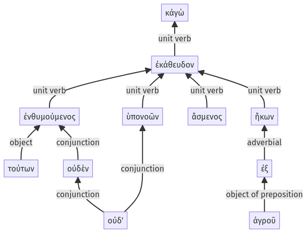

Lysias 1, 1.13.15-1.13.25a
1.12.57-1.13.14a | 1.14.1-1.14.11a
Sentence 30
1.13.15-1.13.25a
κἀγὼ τούτων οὐδὲν ἐνθυμούμενος οὐδ' ὑπονοῶν ἐκάθευδον ἄσμενος, ἥκων ἐξ ἀγροῦ.
2 τούτων οὐδὲν ἐνθυμούμενος
2 οὐδ' ὑπονοῶν
1 ἐκάθευδον
2 ἄσμενος
2 ἥκων ἐξ ἀγροῦ
κἀγὼ τούτων οὐδὲν ἐνθυμούμενος οὐδ' ὑπονοῶν ἐκάθευδον ἄσμενος, ἥκων ἐξ ἀγροῦ.
Highlighting:
- connecting words
- unit verb
- subject
- object
Color code:
- Independent clause (level 1, intransitive verb)
- circumstantial participle (level 2, transitive verb)
- circumstantial participle (level 2, transitive verb)
- circumstantial participle (level 2, intransitive verb)
- circumstantial participle (level 2, intransitive verb)
